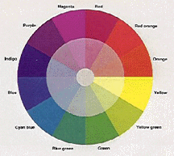
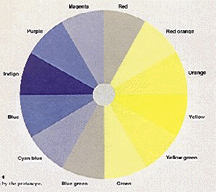
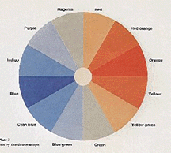
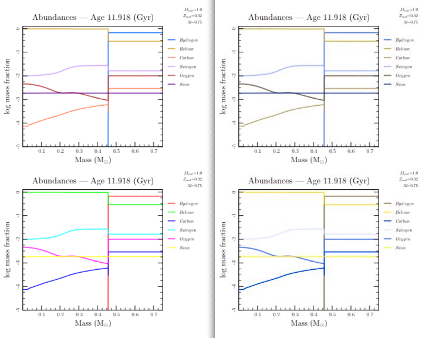
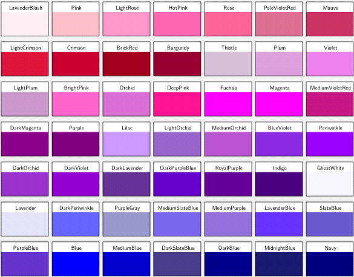
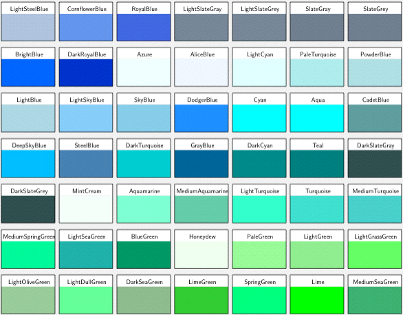
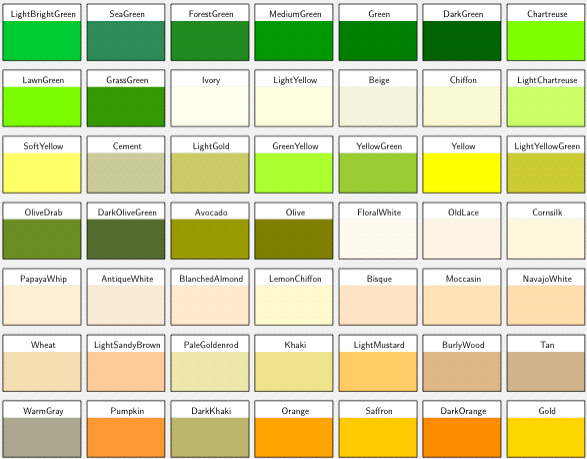
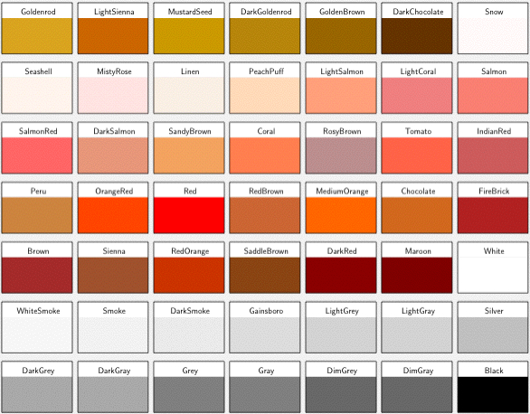

module Tioga::ColorConstants
Color names¶ ↑
The table at the end of this webpage has about 200 color names and the corresponding red-green-blue triples of intensities. These color names can be used wherever a color is called for in tioga. To use the same colors in text, your TeX preamble should have the following:
\include{color_names}
The file color_names.tex is included in the tioga download and
defines the full set of color names given below. To set some text in
color, simply use something like the following:
\textcolor{Crimson}{This will appear in crimson.}
By the way, if you want to use color_names.tex, but don't want copies of it scattered around, you can put it in a directory that is on the LaTeX search path. Check your system for details. On Linux, I believe you can “export” the path to TEXINPUTS. On the Mac, you can try putting the file in ~/Library/texmf/tex/latex. Then add the needed line to your TeX files by doing this in your initialize method for the plots:
t.tex_preamble += "\n\\include{color_names}\n"
In addition to the list of predefined color names, there is a table below giving a small sample of each color.
Concerning the use of colors in plots¶ ↑
When you pick colors for your plots, keep in mind that color deficiency, commonly known as “color blindness”, is a common genetic trait. People with color deficiency are not blind to colors, they simply don't distinguish as many different colors as someone with normal color vision. For example, reds and greens might be the same (“reens” or “geds”?) and only brightness would show up as different. But the reds/greens would still appear to be different colors than the blues.
Two common forms of color deficiency are called “protanopia” and “deuteranopia”. Here's how they are described on the website What Is Colorblindness.
-
For the protanope, the brightness of red, orange, and yellow is much reduced compared to normal. This dimming can be so pronounced that reds may be confused with black or dark gray, and red traffic lights may appear to be extinguished. They may learn to distinguish reds from yellows and from greens primarily on the basis of their apparent brightness or lightness, not on any perceptible hue difference. Violet, lavender, and purple are indistinguishable from various shades of blue because their reddish components are so dimmed as to be invisible. E.g. Pink flowers, reflecting both red light and blue light, may appear just blue to the protanope.
 
-
The deuteranope suffers the same hue discrimination problems as the protanope, but without the abnormal dimming. The names red, orange, yellow, and green really mean very little to him aside from being different names that every one else around him seems to be able to agree on. Similarly, violet, lavender, purple, and blue, seem to be too many names to use logically for hues that all look alike to him.

To be considerate of your color deficient friends, pick color sets that are distinguishable for them too. Here's an example of a plot using six colors. In the first version on the left, the colors of the lines are BrightBlue, Goldenrod, Coral, Lilac, FireBrick, and RoyalPurple. The lower left version uses the often seen combination of red, green, blue, cyan, magenta, and yellow.
On the right are the same plots as they might appear to someone with protanopia (made using VischeckURL – a very useful site).

By using the first set of colors rather than the second, you get a plot that looks good for those in your audience with normal color vision and is much easier on those with a color deficiency. Why not do it?




Constants
- AliceBlue
- AntiqueWhite
- Aqua
- Aquamarine
- Avocado
- Azure
- Beige
- Bisque
- Black
- BlanchedAlmond
- Blue
- BlueGreen
- BlueViolet
- BrickRed
- BrightBlue
- BrightPink
- Brown
- Burgundy
- BurlyWood
- CadetBlue
- Cement
- Chartreuse
- Chiffon
- Chocolate
- Coral
- CornflowerBlue
- Cornsilk
- Crimson
- Cyan
- DarkBlue
- DarkChocolate
- DarkCyan
- DarkGoldenrod
- DarkGray
- DarkGreen
- DarkGrey
- DarkKhaki
- DarkLavender
- DarkMagenta
- DarkOliveGreen
- DarkOrange
- DarkOrchid
- DarkPeriwinkle
- DarkPurpleBlue
- DarkRed
- DarkRoyalBlue
- DarkSalmon
- DarkSeaGreen
- DarkSlateBlue
- DarkSlateGray
- DarkSlateGrey
- DarkSmoke
- DarkTurquoise
- DarkViolet
- DeepPink
- DeepSkyBlue
- DimGray
- DimGrey
- DodgerBlue
- FireBrick
- FloralWhite
- ForestGreen
- Fuchsia
- Gainsboro
- GhostWhite
- Gold
- GoldenBrown
- Goldenrod
- GrassGreen
- Gray
- GrayBlue
- Green
- GreenYellow
- Grey
- Honeydew
- HotPink
- IndianRed
- Indigo
- Ivory
- Khaki
- Lavender
- LavenderBlue
- LavenderBlush
- LawnGreen
- LemonChiffon
- LightBlue
- LightBrightGreen
- LightChartreuse
- LightCoral
- LightCrimson
- LightCyan
- LightDullGreen
- LightGold
- LightGrassGreen
- LightGray
- LightGreen
- LightGrey
- LightMustard
- LightOliveGreen
- LightOrchid
- LightPlum
- LightRose
- LightSalmon
- LightSandyBrown
- LightSeaGreen
- LightSienna
- LightSkyBlue
- LightSlateGray
- LightSlateGrey
- LightSteelBlue
- LightTurquoise
- LightYellow
- LightYellowGreen
- Lilac
- Lime
- LimeGreen
- Linen
- Magenta
- Maroon
- Mauve
- MediumAquamarine
- MediumBlue
- MediumGreen
- MediumOrange
- MediumOrchid
- MediumPurple
- MediumSeaGreen
- MediumSlateBlue
- MediumSpringGreen
- MediumTurquoise
- MediumVioletRed
- MidnightBlue
- MintCream
- MistyRose
- Moccasin
- MustardSeed
- OldLace
- Olive
- OliveDrab
- Orange
- OrangeRed
- Orchid
- PaleGoldenrod
- PaleGreen
- PaleTurquoise
- PaleVioletRed
- PapayaWhip
- PeachPuff
- Periwinkle
- Peru
- Pink
- Plum
- PowderBlue
- Pumpkin
- Purple
- PurpleBlue
- PurpleGray
- Red
- RedBrown
- RedOrange
- Rose
- RosyBrown
- RoyalBlue
- RoyalPurple
- SaddleBrown
- Saffron
- Salmon
- SalmonRed
- SandyBrown
- SeaGreen
- Seashell
- Sienna
- Silver
- SkyBlue
- SlateBlue
- SlateGray
- SlateGrey
- Smoke
- Snow
- SoftYellow
- SpringGreen
- SteelBlue
- Tan
- Teal
- Thistle
- Tomato
- Turquoise
- Violet
- WarmGray
- Wheat
- White
- WhiteSmoke
- Yellow
- YellowGreen